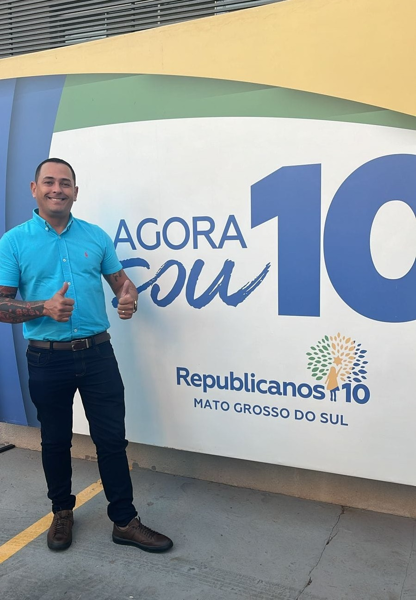
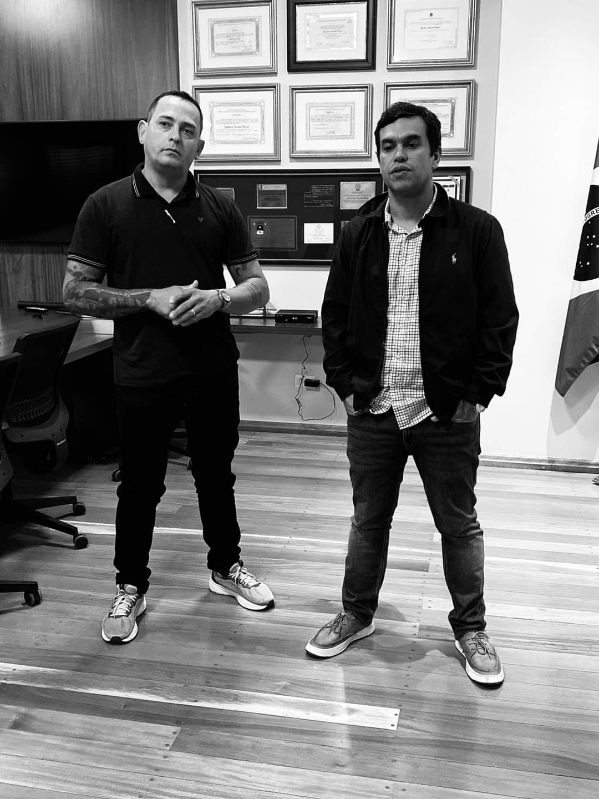
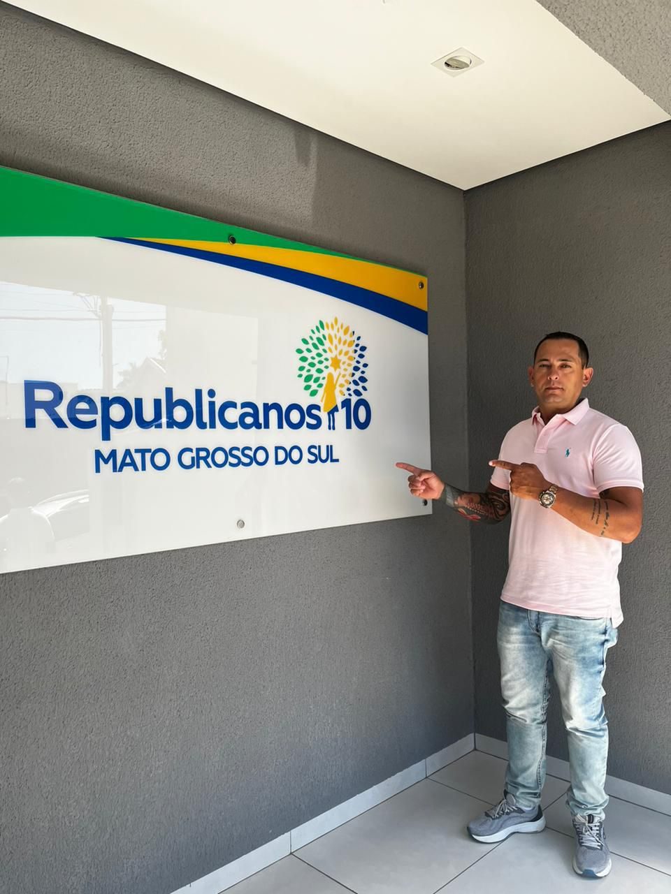
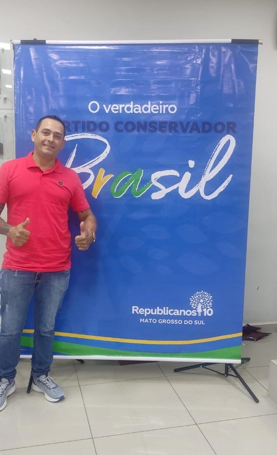

Pré Candidato a Vereador pelo
Quem é o Klebinho da padaria?
Klebinho é um Campo-grandense de 43 anos de origem pobre, nascido e criado nas Moreninhas. Enfrentou o abandono paterno ainda no berço e junto de sua mãe Clemilda e de seus irmãos Fernanda e William passaram necessidades, inclusive a fome. Começou a trabalhar aos 8 anos de idade, em troca de roupas, alimentos, atuou como vendedor de picolés, feirante, carroceiro, cuidador de carros no centro da cidade, entregador de gás, camelô na frente das Lojas Americanas na Dom Aquino, e entre muitos outros aos 9 anos foi trabalhar DURANTE A MADRUGADA em uma Padaria no Centro de Campo Grande, e durante o dia voltava a exercer seus outros trabalhos. Tornou-se Padeiro Profissional na Adolescência e aos 18 anos foi servir o Quartel. Saindo do Quartel foi trabalhar na Empresa Pão e Tal na Euclides da Cunha. A partir daí, algum tempo depois, se ausentou de Campo Grande por aproximadamente 9 Anos.
Destes, 3 anos entre Miranda e Ribas do Rio Pardo, onde teve sua primeira filha, Marjorie. Outros 6 anos passou em Florianópolis, também trabalhando no ramo de padaria, retornando a sua cidade Natal em Janeiro de 2015, e voltando a trabalhar na Empresa Pão e Tal. Cinco meses após seu retorno casou-se com Patrícia, com quem teve 2 filhos, Isabella e Gabriel Jesus e ganhou de presente seu enteado Henrique. Em Abril de 2016 abriu sua própria empresa "Klebinho Padaria e Conveniência" e a partir daí começa a olhar com NOVOS OLHARES para a comunidade onde nasceu e cresceu. Começando então, devagar e silenciosamente, alguns trabalhos sociais que nunca fez questão de divulgar nas redes sociais. Hoje se compromete a buscar melhorias significativas para a comunidade e acredita que chegou a hora de unir forças e trabalhar junto dos Campo-grandenses a fim de construir um futuro mais próspero e justo para todos. Hoje Pré Candidato a Vereador pelo Partido Conservador do Brasil REPUBLICANOS10



